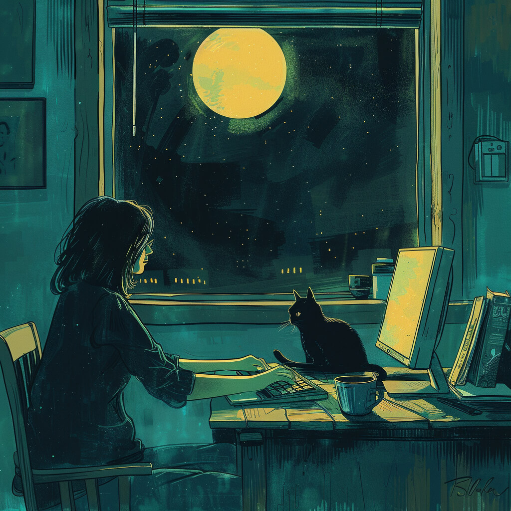
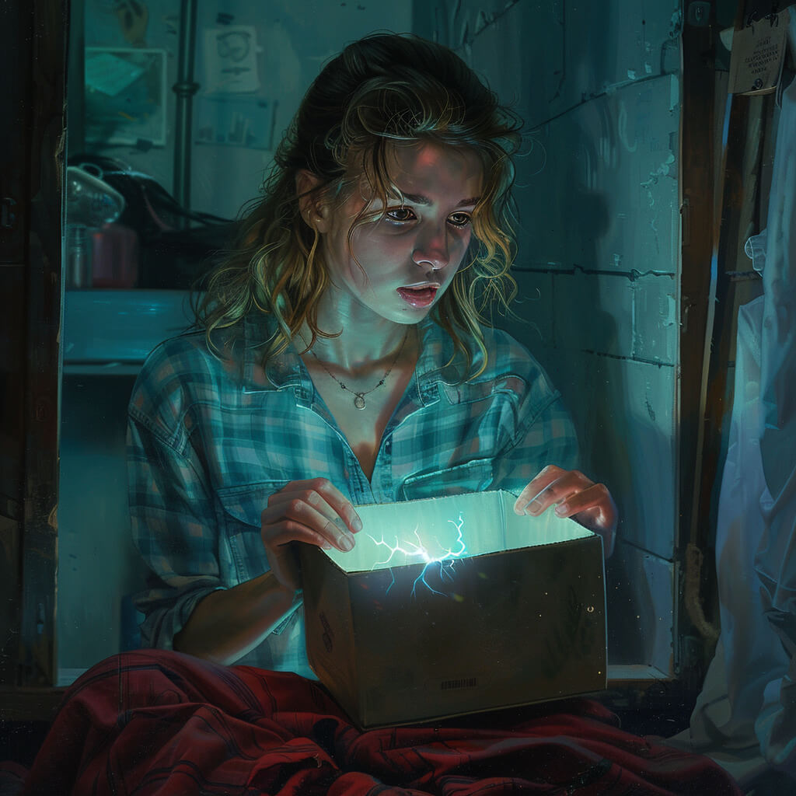
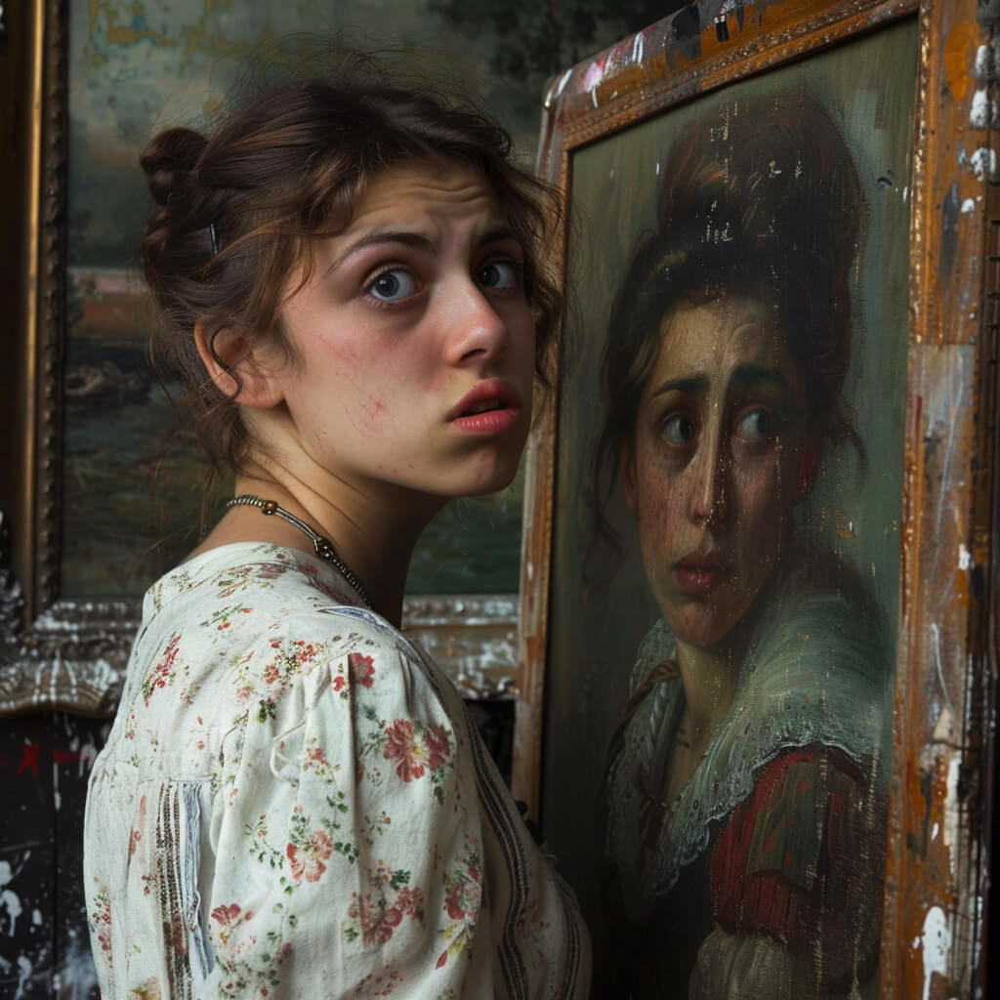
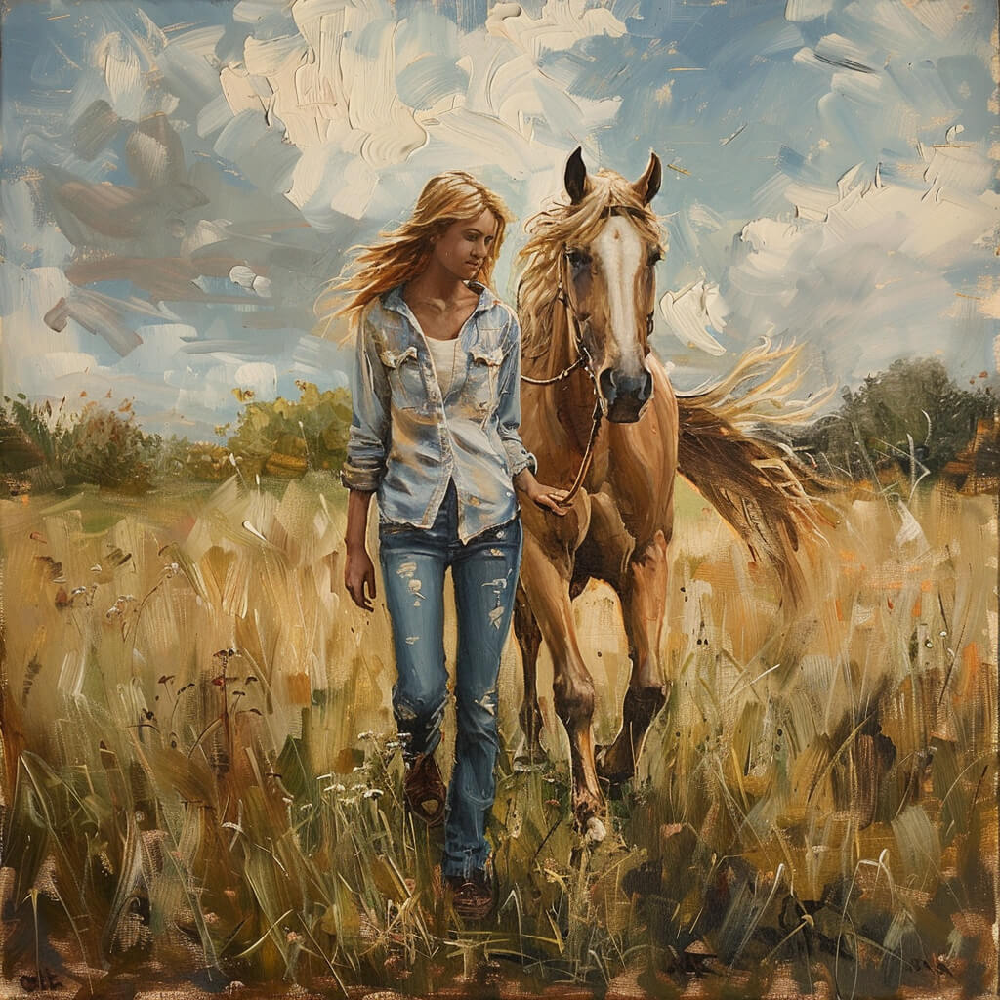
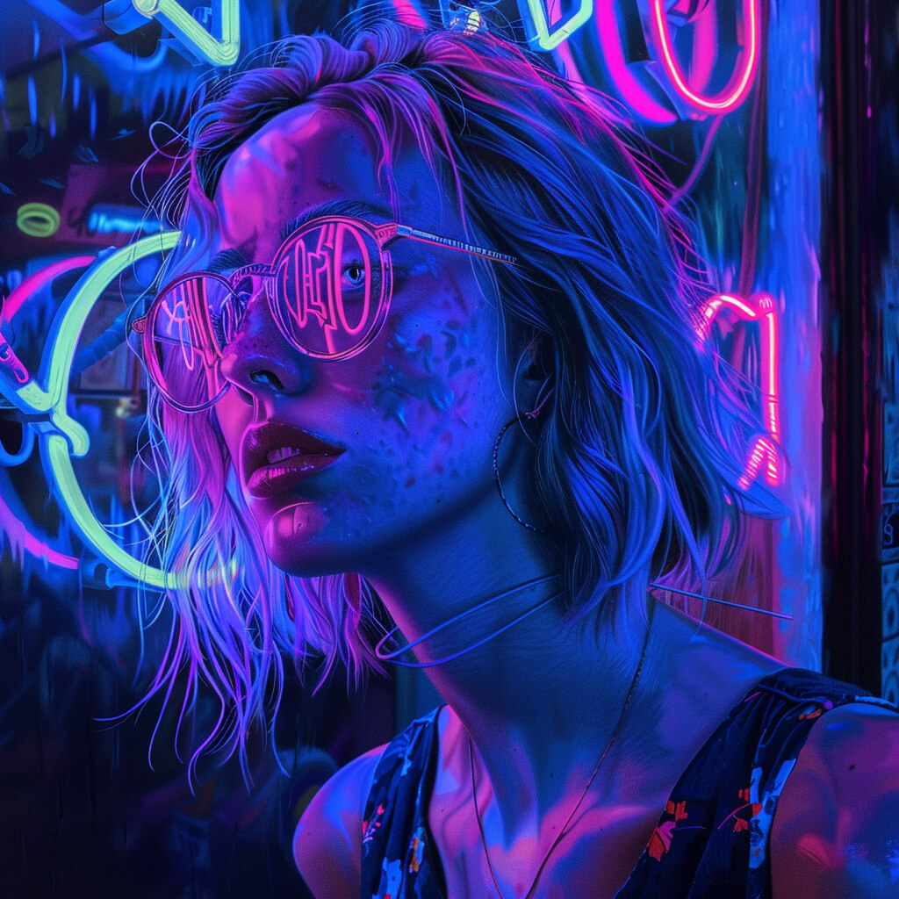
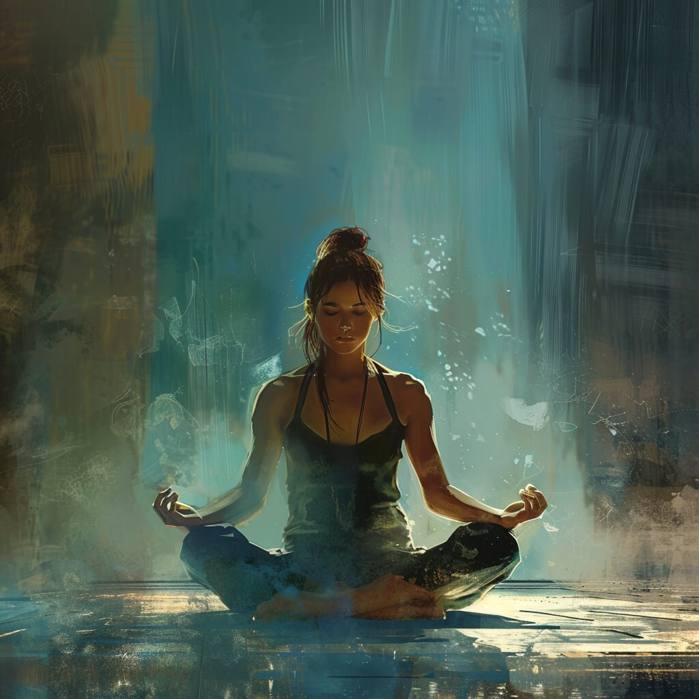
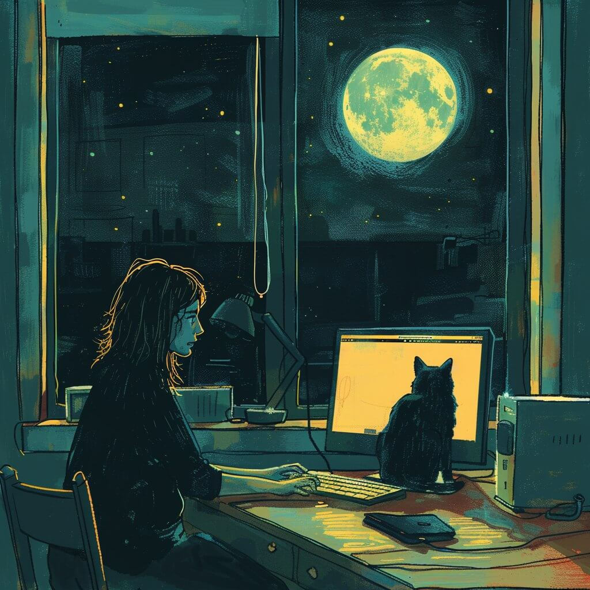

-
Фритрек и нулевой спринт: Подготовка к работе
 <total_recall>Это было самое начало пути. На этом этапе важно было проникнуться основами и настроиться на учёбу. И, возможно, подумать, как новые знания могут повлиять на ваше будущее.
Для меня нулевой спринт был не самым началом пути, а возвращением к самому началу: я уже пробовала пройти курс "Веб-разработчик" около года назад, но дойти до конца не смогла по разным причинам.
-
1 спринт: Я — чистый лист
 <surprise>На первых этапах мы работали со страхами и сомнениями, которые часто испытывают новички. Один из них — страх перед чистым листом. Это, конечно же, намного сложнее, чем боязнь куска бумаги. Часто за этим ощущением скрываются более глубокие вопросы: с чего начать? а вдруг будет слишком сложно? что, если я не справлюсь?
Я думала, что начну не с чистого листа. Но оказалось, что в курсе много обновлений по сравнению с Веб-разработчиком, и все проекты уже другие. Так что лист все равно получился чистым.
-
1 спринт: А если не получится?
 <ono_nado>Первый проект — позади! Но это всё ещё самое начало пути. Радость могла быстро померкнуть и смениться ожиданием провала. Или вы, наоборот, могли вдохновиться успехами и поверить в себя.
Проект "Оно тебе надо" неприятно удивил дизайном. Однако оно мне надо, поэтому продолжаем работу.
-
2 спринт: Погоня за идеалом
 <horses>На этом этапе вы уже достаточно разбирались в основах вёрстки, чтобы понять, как много ещё впереди. Вы могли попытаться погнаться за идеалом и понять, что он недостижим. А, может, вы вовсе и не подвержены перфекционизму и вместо того, чтобы сделать идеально, старались просто сделать.
Во втором спринте я познакомилась с конём. Тот, с которым по полю вдвоём. Раздражение от изложения теории достигло пика, и я подумывала, не уйти ли изучать фронтенд в другую школу.
-
2 спринт: О тех, кто рядом
<support>Всё это время вы были не одиноки (хотя, возможно, иногда и чувствовали, что одни против целого мира). Вас окружали одногруппники, команда сопровождения и просто близкие люди, которым можно пожаловаться, если очередной макет просто так не поддавался. Осваивать что-то новое легче, когда рядом есть единомышленники, не правда ли?
Благодаря поддержке мужа, детей и друзей, я смогла пережить коня и поля.
-
3 спринт: Обходные стратегии
 <neon>На этом курсе вы постоянно решали разные задачи. В какой-то момент вам могло показаться, что решения просто иссякли. Значит, пришло время посмотреть на задачу под другим углом.
Посмотрев на дизайн темной темы проекта "Сложно сосредоточиться", я поняла, что проект "Оно тебе надо" был красивым.
-
3 спринт: Когда опускаются руки
 <dzen>Во время учёбы часто возникает чувство, когда не знаешь, за что хвататься. Вроде и проектную пора сдавать, и задачи хочется порешать, и в теории получше разобраться, и жизнь не забыть пожить. В такие моменты очень нужна концентрация. Вспомните, откуда вы её черпали.
В ходе третьего спринта я научилась абстрагироваться от лишних вставок в теории и игнорировать цветовую гамму проекта, от которой вытекают глаза. Поэтому третий спринт прошел легче первых двух.
-
«Сейчас я здесь»
 <expectations>Сейчас вы уже очень много знаете о вёрстке. Но это только начало. Во-первых, впереди ещё много материала про «красотищу». Во-вторых, с окончанием курса учёба не заканчивается. Вёрстка — это целый мир. И этот мир постоянно меняется. Познать его полностью не получится, но это тот случай, когда важен сам процесс познания. Ведь часто путь — и есть результат.
Довольна тем, как курс позволил освежить и расширить знания в области верстки, и искренне надеюсь, что в дальнейшем логики изложения будет больше, а коней в полях — меньше.